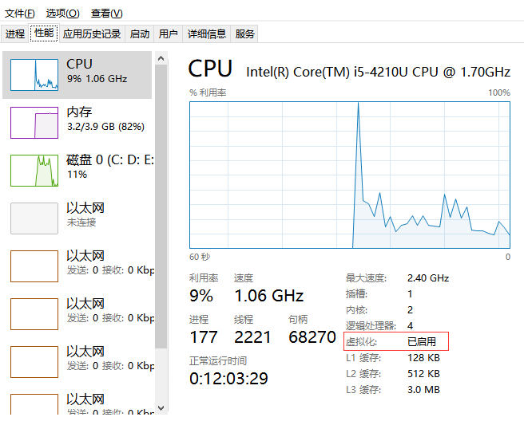
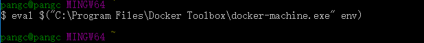

简介
Docker是一个开源的应用容器引擎，让开发者可以打包他们的应用以及依赖包到一个可移植的容器中，然后发布到任何流行的Linux机器上，也可以实现虚拟化。容器是完全使用沙箱机制，相互之间不会有任何接口。
通俗点说，你可以随意将别人的整个应用移植到你的linux机上，然后发布。如下图，很形象。

Docker的安装与配置
因为国内有“墙”，从github上下载Docker特别慢，所以推荐一个国内的下载地址：http://get.daocloud.io/，由DaoCloud技术提供。
windows os直接下Docker Toolbox，里面打包了Docker、Kitematic（一个docker gui工具，挺好用的，不过 一般大家还是习惯用命令行）、VirtualBox（Docker支持在原生linux上运行，win与mac os还不支持，所以需要搞一个linux虚拟机），安装过程傻瓜式下一步下一步。
在windows下面，Docker的架构如下图：

- Docker client：Docker的客户端，Docker本身是一种cs架构。
- Docker Host：Docker主机，也就是放docker镜像的地方。
- Docker daemon：Docker的守护进程，也就是服务端进程。
- Docker container：里面的一个个集装箱，也就是Docker的容器，后面会讲到。
可以看到在windows下，只有client端在windows操作系统中，其他均在linux vm环境里。
注意事项
- 支持windows 7以上
- 需要有64位的操作系统
- 你的CPU支持虚拟技术，并且在BIOS中已打开（win的任务管理器→性能里面可以看到CPU是否支持虚拟化技术），如下图：

Docker核心组件
- Docker Machine
Docker machine实际上是帮助我们在Mac/Win下管理Docker host的工具，linux下不需要。具体架构如下图所示。

- Docker Machine是当前在Mac/Win上运行Docker的唯一方式
- 支持不同版本的Linux上管理多个Docker主机
- 提供集中创建和管理Docker主机的功能
- 与Docker Swarm集成创建Docker集群
- Docker image、registry、container

registry：集中管理image。
image：镜像。
container：镜像的实例，实际运行的组件。
一个registry里可以有多个image，一个image可以有多个container实例。
- Docker Machine基本使用
在步骤一通过Docker ToolBox安装完Docker后，双击启动Docker Quickstart Terminal，它会自动帮我们创建一个默认的Docker Machine，名字为“Default”，随后进入到如下界面：
Docker Machine的常用命令如下：
| 命令名 | 作用 |
|---|---|
| version/help | 查看版本/查看帮助 |
| create/rm | 创建/删除一个Docker Machine |
| start/stop/restart/kill | 起停Docker Machine（实际上就是起停VM） |
| active/config/env/inspect/ip/ls/status/url | 获取一些信息 |
| ssh | 远程登录到Docker Machine |
| scp | 本地与Docker Machine之间传输文件 |
Docker实战
通过Docker快速部属静态网站。
|
|
|
|

|
|
|
|
|
|
|
|
此时浏览器访问192.168.99.100:8080 （IP：docker machine的IP，可以通过docker-machine ls命令查看，端口号为machine映射的容器端口号8080:80，访问machine的8080端口实际上是访问的container的80端口）
附录
附上阿里云与网易蜂巢地址，里面有丰富的镜像，可以试着搭建一下。ps：由于伟大的“墙”的关系，Docker hub无法访问，所以还是访问国内的镜像吧。
阿里：https://dev.aliyun.com/search.html
也可以用Kitematic直接下载镜像：
最后
不得不说这个小鲸鱼太他妹的萌了。